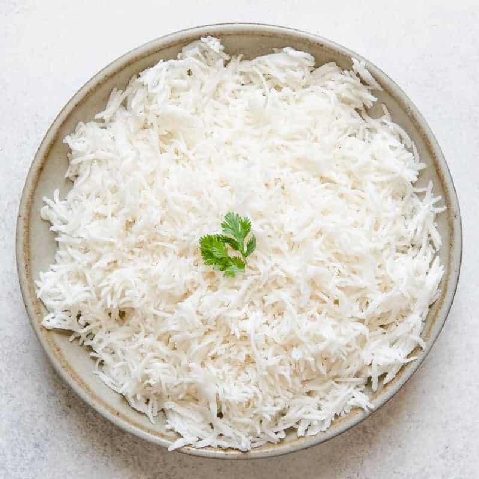

Basamti Rice

Description
Simple basmati rice, like in the restaurants!
Ingredients
- 1¾ cups water
- 1 cup basmati rice
- ¼ cup frozen green peas
- 1 teaspoon cumin seeds
Steps
- In a saucepan bring water to a boil. Add rice and stir. Reduce heat, cover and simmer for 20 minutes.
- When rice is cooked, stir in peas and cumin. Cover and let stand for 5 minutes.